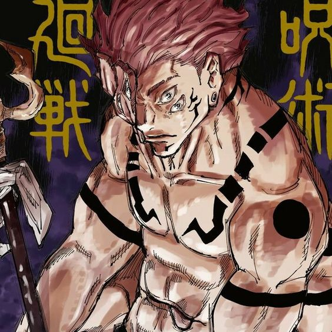
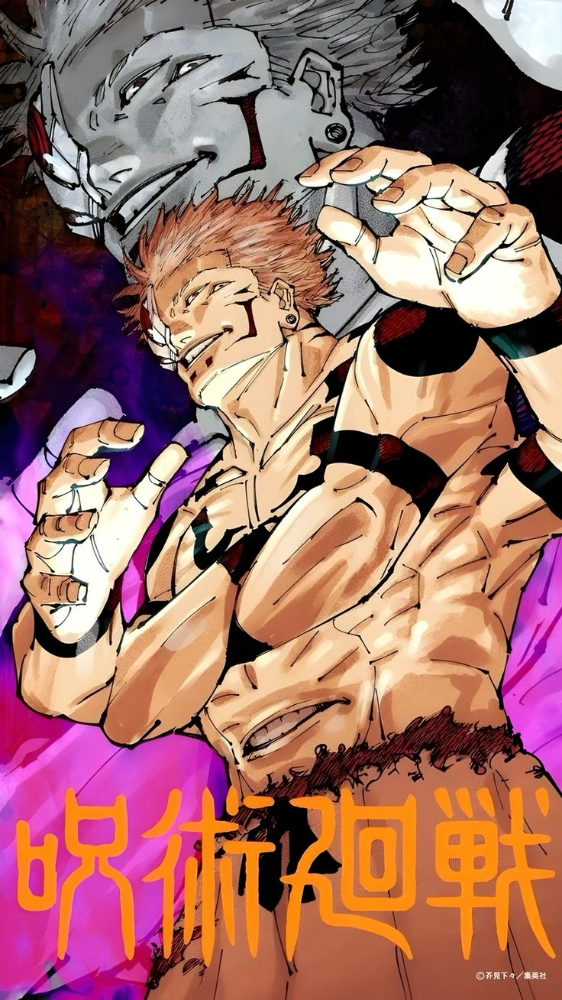
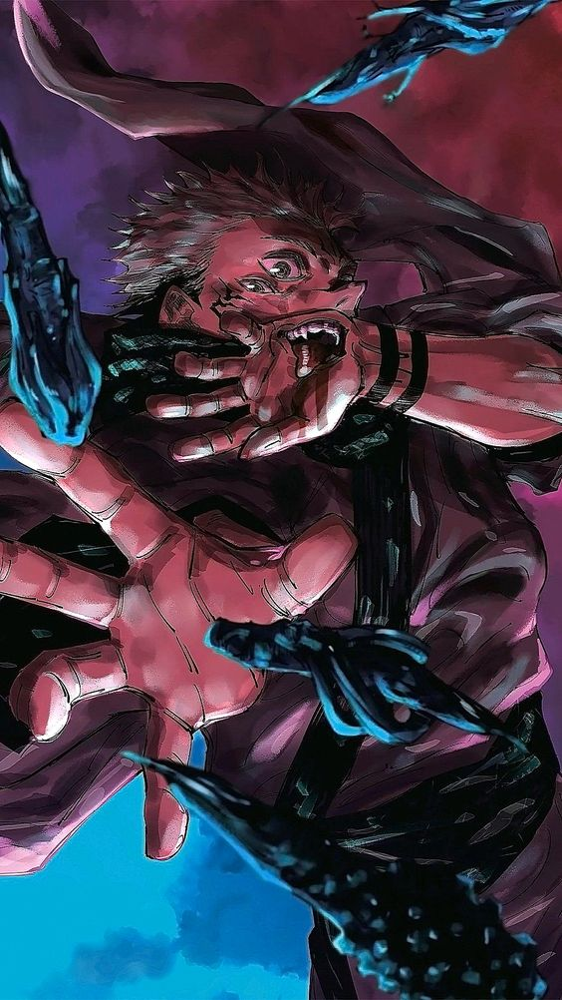

| Home | Personagem |
|  | Aparência |
| 
Personalidade
Sukuna está ciente de seu imenso poder e é bastante arrogante sobre isso, brutalizando um portador de dedos enquanto é paternalista e proclama sua superioridade sobre ele. Por esta razão, ele é altamente desdenhoso de seus oponentes e raramente os leva a sério, mesmo afirmando explicitamente que mataria Satoru Gojo em seu rosto. No entanto, esses traços brutos não devem ser confundidos com estupidez. Sukuna é altamente inteligente e manipulador, tomando o corpo de Yuji como refém, arrancando seu coração para forçá-lo a um Voto de Ligação. Ele também mostrou a capacidade de reconhecer e elogiar seus oponentes, como mostrado por como antes de matar Jogo Sukuna reconheceu sua força, apesar de tê-lo dominado completamente e disse a Jogo que ele deveria estar orgulhoso.
Através da conversa de Sukuna com Yuji durante sua luta depois de possuir o corpo de Megumi, Sukuna defende que ele compara seres humanos a insetos e admite que é incapaz de entender por que os fracos se apegam tão desesperadamente à vida em vez de aceitar silenciosamente o sofrimento que a vida os força a suportar, já que os fracos não deveriam ter o direito de reclamar. Ele também afirma que não entende como uma criatura que desmorona a um toque pode dizer que sempre quer ser feliz, o que expressa sua antipatia e desconsideração das emoções humanas e sua vontade de viver. Também revela que a percepção da vida de Sukuna adere fortemente ao darwinismo social. Também é repetidamente afirmado que Sukuna tem uma visão míope sobre o amor e não compreende o valor dos relacionamentos.
|
| 
Curiosidades
2-Quantos dedos Yuji Itadori consumiu:Ao todo foram 15, com a grande maioria ingerida durante o incidente de Shibuya.
3-O que aconteceria se duas pessoas diferentes consumissem o dedo do sukuna:Como a chance de sobreviver é de uma em um milhão, é muito provável que não veremos ninguém além do Yuji tendo consumido dedos do Sukuna em Jujutsu Kaisen.
4-Por que os dedos do Sukuna não foram destruidos:Porque eles são indestrutíveis, eles são classificados como objetos amaldiçoados especiais, e Gojo até demonstrou no começo do anime que não tem como destruir com eles.
5-Qual a força dos dedos do Sukuna:Um dedo equivale a um monstro de grau especial, dois dedos já é mais do que o dobro dessa força. Fushiguro quase morreu pra derrotar um inimigo de grau especial no final da primeira temporada do anime, ou seja, ele mal e mal conseguiria bater de frente com o Sukuna do começo do anime. |